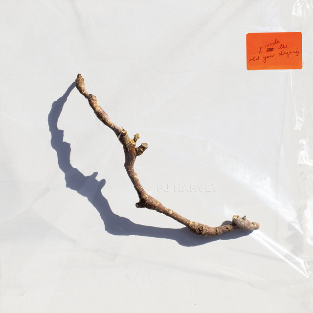

PJ Harvey - I Inside the Old Year Dying



Información del álbum facilitada por discogs.com:
Fecha de lanzamiento: 2023
Géneros: Rock
Estilos: Alternative Rock
Pais: Russia
Votos: Media de 4.33 con 3 votos
Sello: DNA Production
Tracklist:
A1. Prayer At The Gate 4:14
A2. Autumn Term 3:20
A3. Lwonesome Tonight 3:48
A4. Seem An I 3:06
A5. The Nether-edge 3:17
A6. I Inside The Old Year Dying 1:52
B1. All Souls 4:21
B2. A Child’s Question, August (feat. Ben Whishaw & Sam Petts-Davies) 2:46
B3. I Inside The Old I Dying (feat. Colin Morgan & Sam Petts-Davies) 3:08
B4. August (feat. Ben Whishaw & Sam Petts-Davies & Elvis Presley & Vera Matson) 2:41
B5. A Child’s Question, July (feat. Colin Morgan & Sam Petts-Davies) 3:02
B6. A Noiseless Noise 3:57